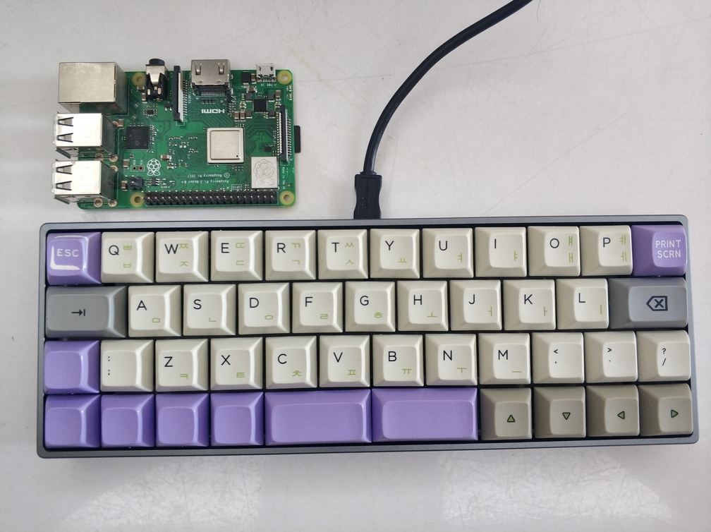

Byte-Sized Blog
Categories
All
(15)
DevOps
(7)
Hardware
(1)
Networking
(1)
Programming
(2)
WebDev
(3)
Writing
(1)
Byte-Sized Blog
Welcome to my blog where I share thoughts on technology, programming, and more.
Order By
Default
Title
Date - Oldest
Date - Newest
Author

40%键盘YDPM40
Hardware
最近看到有人晒的Planck EZ，对40%键盘非常心动，不过Planck EZ的价格还是太高了，于是在咸鱼上入了一把YDPM40。YDPM40是YANG设计的，分为YDP40和YDM40两种布局，前者是类似于Planck的直排，而后者更接近于一般键盘的斜排。我买的这把是YDM40，共44个键，非常适合极简主义者以及囊中羞涩（毕竟需要的轴比较少）…
Mar 18, 2020
网件WNDR4300上安装配置OpenWrt
Networking
WNDR4300是对OpenWrt支持比较好的一款路由器：其内存和闪存都是128M，有比较好的ROM支持，是一个比较适合折腾的路由器。
Dec 2, 2015
SmartOS折腾笔记
DevOps
前段时间入手了一台Gen8，准备用做家里文件、媒体服务器。看了EXSi、FreeNAS、NAS4Free、Proxmox等方案后，觉得还是SmartOS最好。它支持ZFS，能够更好管理数据、保证数据有效性；此外，它支持kvm虚拟化技术，能够虚拟常见的操作系统，满足各种软件需求；它还支持类似Docker的Zones容器技术，比kvm更为高效。
Jul 8, 2015
备份Mac AppStore中安装的应用
DevOps
在Mac中安装软件并不像Linux那么方便，它没有一个统一的软件管理器来处理大部分的情况。我同时用了Homebrew、Homebrew Cask和Mac…
Feb 16, 2015
Nix: 纯函数式包管理器
DevOps
Nix是一个Linux/Unix下的包管理器，它支持原子升级和回滚、能够同时安装同一个包的多个版本、支持多用户，能够更加简单地搭建开发、构建环境。它最大的卖点在于
函数式
的管理方式：把软件包作为函数式语言的值，这些值由没有副作用的函数构建，一旦构建完就不再改变，这意味着你的软件运行环境一旦构建就不会改变——这对于可重现的开发而言非常重要。
Sep 21, 2014
Webpack: 为Web开发而生的模块管理器
WebDev
对于开发人员而言，好的包管理器可以让工作事半功倍。现在流行的编程语言大多有自己的包管理系统。近年来，Web开发越来越火，其开发工具也随之越来越好用了，而Webpack就是一款专为Web开发设计的包管理器。它能够很好地管理、打包Web开发中所用到的HTML、Javascript、CSS以及各种静态文件（图片、字体等），让开发过程更加高效。
Sep 10, 2014
阿里云服务器的Docker配置
DevOps
最近把程序放到阿里云服务器上，并尝试用Docker来部署。阿里云的镜像列表里面已经有了Ubuntu 14.04 64位，可以直接安装Docker。然而，由于阿里云服务器的特殊情况，需要进行配置才能用。
Jul 30, 2014
快速构建Mac环境
DevOps
最近硬盘不幸挂掉，换了新硬盘后重装系统、搭建环境真是一个痛苦的过程。尤其是后者，各种软件的配置、开发环境的设定，非常繁琐。这里索性总结一下，怎么能够将开发、应用的环境配置系统化，使得更换系统时能够迅速重建原来的环境。这里虽然是针对Mac来说的，对于Linux应该也类似。
Jul 15, 2014
走马观花看Puppet
DevOps
Puppet是目前最流行的一套配置管理(Configuration Management，简称CM)系统。它提供了一套简洁、强大的框架，使系统管理的重用、分享更加简单，让系统配置更加自动化。在云计算时代，动辄需要配置大量主机，它的作用更加明显。
Jul 14, 2014
Docker on Mac
DevOps
在虚拟化领域，Docker是一颗冉冉升起的新星。它构建于LXC之上，比传统的虚拟机技术相比，它没有操作系统层，因此更加轻量化，灵活性和可移植性也更好。
Jun 6, 2014
混乱的标点符号
Writing
打开你经常上的几个网站，翻开你正在看的书，拿起你身边商品的包装，仔细观察一下其中的标点，有没有被用法各异的标点所困扰？中、英文之间的差异，输入法之间的差异，排版软件处理细节的不同，让标点符号变得异常混乱。
Jul 26, 2013
Python的方法解析顺序(MRO)
Programming
对于支持继承的编程语言来说，其方法（属性）可能定义在当前类，也可能来自于基类，所以在方法调用时就需要对当前类和基类进行搜索以确定方法所在的位置。而搜索的顺序就是所谓的「方法解析顺序」（Method Resolution Order，或MRO）。对于只支持单继承的语言来说，MRO 一般比较简单；而对于 Python…
Jul 25, 2013
Markdown 的 Ansi 显示
WebDev
随着 Jekyll、Octopres、Docpad 等一批静态博客生成器的兴起，Markdown 已经成为写博客的利器。不过，有时候想把博客上的文章直接贴到 BBS 上还是需要去做一些转换，把格式转换为 ANSI 颜色控制符。
Apr 6, 2013
C++11 和 C++98 的 ABI 兼容性
Programming
C++11 出来已经好几年了，对其中有些特性还是很感兴趣的，比如 rvalue reference、lambda、alias templates、range-based for 等，正好最近在写 C++ 的代码，就准备尝试一下。
Jan 27, 2013
DocPad：基于 CoffeeScript 的静态网站生成器
WebDev
DocPad 是一个静态网站生成器，同 Jekyll、Octopress 相比，它的可定制性更强； 由于是用 CoffeeScript 写的，速度也比以上两个快很多。最近两天玩了一下，感觉很不错：功能很强大，虽然有些插件不太稳定，但基本功能已经比较完备了。
Jan 6, 2013
No matching items